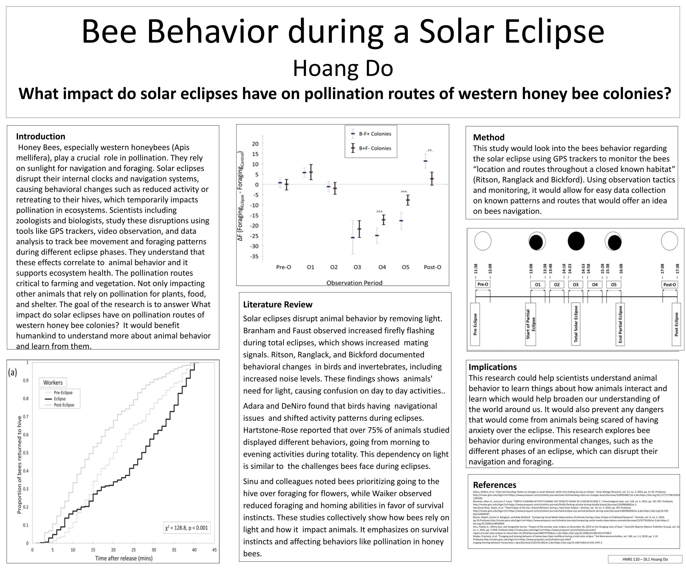
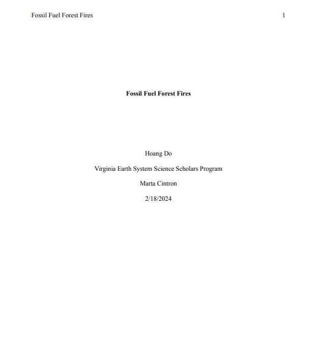
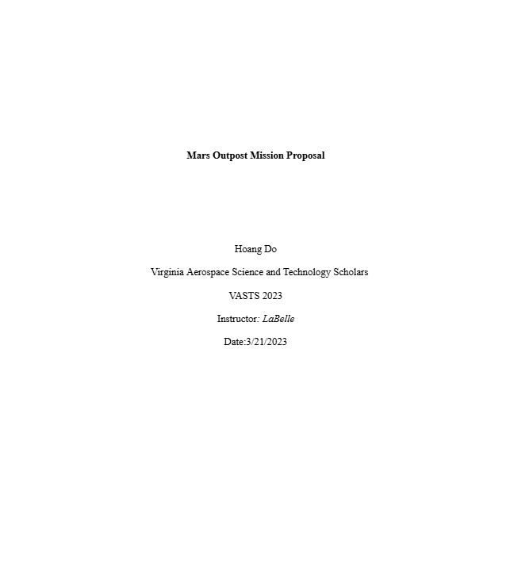

Research
Current Research
None at the moment, but currently looking for CS research positions
Past Papers
Bee Behavior during a Solar Eclipse

This research proposal explores the impact of solar eclipses on the pollination routes of western honeybee (Apis mellifera) colonies, emphasizing their crucial role in ecosystems and agriculture. It examines how eclipses disrupt honeybee navigation and behavior, leading to reduced activity and temporary retreat to their hives, which affects pollination. By utilizing tools such as GPS trackers, video observation, and data analysis, scientists study these behavioral changes to understand their broader effects on ecosystems. The research aims to shed light on the correlation between solar eclipses, animal behavior, and ecosystem health, offering valuable insights for enhancing agricultural practices and ecological stability.
Click here to view my paper
Stomatal Density Variation and Water Use Efficiency

This research experiment compares How do different plant species vary in their stomatal density? We start by comparing different plants in a same area but differences in their height. The experiment starts from collecting leaves from trees, bushes, vines, etc. all from different heights and compare their stomatal density to see how height plays a factor. The results showcase that mainly the leaves that are shorter have higher stomatal density.
Click here to view my poster
Fossil Fuel Forest Fires

This paper examines and draws inferences about the interaction between human activity and forest fires, highlighting the devastating impact on the environment and its inhabitants, including humans. These effects stem from the extensive use of fossil fuels in factories and daily human activities, which pose significant threats to animals and plants within forest ecosystems. The paper explores the origins of the problem, its escalation, and the widespread consequences for forests. Additionally, it analyzes the effects of forest fires on the four major Earth spheres—the Lithosphere (or Geosphere), Hydrosphere, Biosphere, and Atmosphere—along with the interactions between these spheres. The importance of understanding this issue is emphasized, along with the necessity of implementing measures to stop and prevent forest fires to protect ecosystems and ensure environmental sustainability.
Click here to view my paper
Mars Outpost Mission Proposal

This is a technical report going over the feasibility and significance of establishing human habitation on Mars. It will discuss the discoveries made about Mars's climate and geology through ongoing exploration and their implications for sustaining life. Additionally, the paper will examine the potential benefits of utilizing Mars's resources for humanity and the steps needed to prepare for living on the planet. It will also address the key requirements and constraints of a Mars mission, aiming to provide a comprehensive understanding of what is necessary to make a Mars outpost a reality.
Click here to view my paper